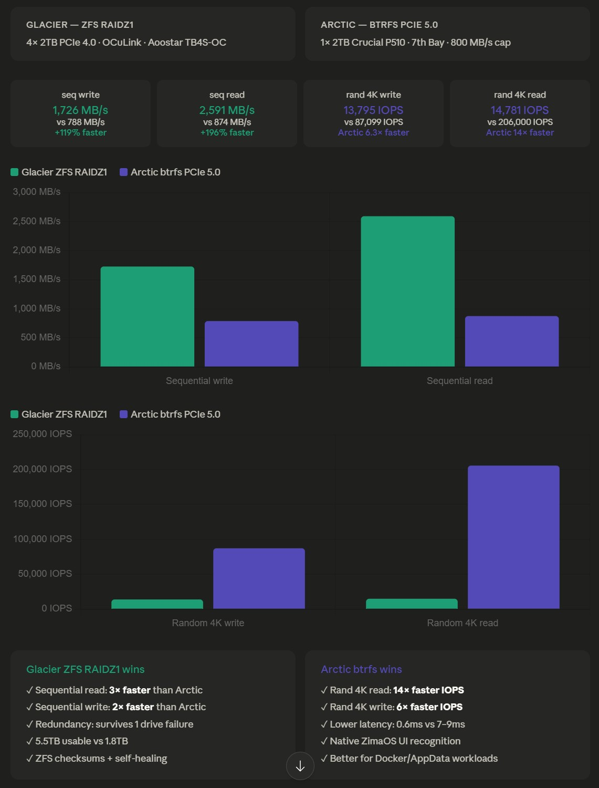

ZimaCube 2 — Phase 1.5: Storage Benchmarks¶
Author: ted-knight
Date: May 23, 2026
Updated: June 04, 2026
Program: ZimaCube 2 Pioneer Program
Hardware: ZimaCube 2 Standard
Phase 1.5 is the benchmark deep-dive companion to Phase 1: Foundation & Storage. Phase 1 covers the hardware build, ZFS/btrfs pool setup, and the storage architecture. This document holds the full benchmark methodology, results, and analysis — the cold baseline, warm ZFS ARC measurements, and the per-phase workload split.
Overview¶
Before loading this machine up with Jellyfin, Immich, and eventually Ollama, I wanted to know exactly what I was working with. Two very different storage designs sitting in the same box — how fast are they really, where does each one shine, and where are the surprises? I ran fio across both and some of the results genuinely shifted how I think about which workloads go where.
The two tiers I tested: - Glacier — ZFS RAIDZ1 across 4× 2TB PCIe 4.0 NVMe SSDs via OCuLink (Aoostar TB4S-OC enclosure) - Arctic-Storage — btrfs on a single 2TB PCIe 5.0 NVMe in ZimaCube 2's internal 7th Bay slot
Cold baselines came first (benchmark-glacier.sh + benchmark-arctic.sh, May 23, 2026). Then I built benchmark-arc.sh — a 7-step suite that measures both cold and warm ZFS ARC performance in a single run, giving a complete picture of how glacier actually behaves day-to-day rather than just at a cold start (June 3–4, 2026).
Hardware Configuration¶
ZimaCube 2 Standard¶
| Component | Specification |
|---|---|
| CPU | Intel Core i3-1215U (12th Gen, 6-core) |
| RAM | 16GB DDR5 |
| OS Drive | Kingston OM8PGP4 256GB NVMe (nvme5n1) |
| OS | ZimaOS (Buildroot-based, immutable) |
| PCIe Slot 1 | Physical x16 slot · PCIe 4.0 x4 lanes → OCuLink SFF-8612 adapter card |
| 7th Bay Slot 1 | Crucial P510 2TB PCIe 5.0 NVMe |
Glacier Pool — External Enclosure¶
| Component | Specification |
|---|---|
| Enclosure | Aoostar TB4S-OC |
| Connection | OCuLink via PCIe 4.0 x4 lanes · Slot 1 (physical x16 slot) |
| Chip | ASM2462PDX |
| Bandwidth per slot | 800 MB/s (PCIe 3.0 x1 per slot) |
| Total bandwidth | ~3,200 MB/s (4 slots combined, theoretical max) |
| Drive × 2 | ORICO 2TB NVMe PCIe 4.0 |
| Drive × 2 | XPG GAMMIX S70 BLADE 2TB PCIe 4.0 |
| Filesystem | ZFS RAIDZ1 |
| Pool name | glacier |
| Mount point | /media/glacier |
| Usable capacity | ~5.5TB |
Arctic-Storage — Internal 7th Bay¶
| Component | Specification |
|---|---|
| Drive | Crucial P510 2TB PCIe 5.0 NVMe |
| Connection | Internal 7th Bay (ZimaCube 2 Standard) |
| Bandwidth cap | 800 MB/s total (7th Bay ASMedia bridge) |
| Filesystem | btrfs |
| Mount point | /media/Arctic-Storage |
| Usable capacity | ~1.8TB |
ZFS Pool Configuration¶
The glacier pool was created with the following parameters:
zpool create -f \
-m /media/glacier \
-o ashift=12 \
-O compression=lz4 \
-O atime=off \
-O xattr=sa \
-O acltype=posixacl \
glacier raidz1 \
/dev/nvme1n1 \
/dev/nvme2n1 \
/dev/nvme3n1 \
/dev/nvme4n1
ZFS Datasets¶
glacier /media/glacier
glacier/VM /media/glacier/VM
glacier/appdata /media/glacier/appdata
glacier/backup /media/glacier/backup
glacier/documents /media/glacier/documents
glacier/downloads /media/glacier/downloads
glacier/gallery /media/glacier/gallery
glacier/media /media/glacier/media
ZimaOS Integration via Symlinks¶
ZFS pools created via CLI are invisible to the ZimaOS storage UI. Datasets are exposed in the Files app via symlinks in /DATA:
ln -s /media/glacier/VM /DATA/glacier-VM
ln -s /media/glacier/appdata /DATA/glacier-AppData
ln -s /media/glacier/backup /DATA/glacier-Backup
ln -s /media/glacier/documents /DATA/glacier-Documents
ln -s /media/glacier/downloads /DATA/glacier-Downloads
ln -s /media/glacier/gallery /DATA/glacier-Gallery
ln -s /media/glacier/media /DATA/glacier-Media
Benchmark Methodology¶
Tool¶
fio 3.38 — natively available on ZimaOS Buildroot. No installation required; confirmed with fio --version in the ZimaOS terminal.
Terminal Access¶
ZimaOS does not expose SSH by default. The web-based terminal was accessed via:
- Open ZimaOS Settings
- Navigate to General → Developer Mode
- Click View to open the Developer panel
- Launch the Web-based terminal
All commands were run as root inside this session:
Script Deployment via WinSCP¶
The benchmark scripts (maintained in this repo under docs/resources/scripts/) were uploaded to the ZimaCube using WinSCP from the Windows host:
| Path | |
|---|---|
| Local (repo) | docs/resources/scripts/ |
| Remote (ZimaCube) | /DATA/Documents/nvme-benchmark/ |
WinSCP connection details:
- Host: 192.168.xxx.xxx
- Protocol: SFTP
- Port: 22
Files uploaded:
- benchmark-glacier.sh
- benchmark-arctic.sh
- benchmark-compare.sh
- benchmark-arc.sh
Execution¶
Phase 1 — Initial cold benchmarks (May 23, 2026)¶
benchmark-glacier.sh and benchmark-arctic.sh were run first to establish raw cold-cache throughput for both pools:
sudo -i
cd /DATA/Documents/nvme-benchmark
chmod +x benchmark-glacier.sh benchmark-arctic.sh benchmark-compare.sh
./benchmark-glacier.sh
./benchmark-arctic.sh
Each script runs 4 sequential fio tests (seq write → seq read → rand 4K write → rand 4K read) with --direct=1 throughout, captures pool-specific stats, cleans up its temp file, and saves results automatically.
Phase 2 — Expanded glacier testing: cold + warm ARC (June 3–4, 2026)¶
After the initial cold baseline, benchmark-arc.sh was added to extend glacier testing across both cold and warm cache paths. It is the definitive glacier benchmark — runs cold write tests identically to benchmark-glacier.sh, then adds an ARC warm-up pass, a warm ARC read, and a cold --direct=1 reference read side-by-side in a single run:
The script runs 7 steps automatically:
- Capture ARC state before (baseline hits, misses, cache size)
- Sequential write —
--direct=1, 4 jobs, 1 M blocks, 60 s - Random 4K write —
--direct=1, 4 jobs, 4 K blocks, 60 s - Warm-up pass — sequential read without
--direct=1(populates ZFS ARC with the test file) - Warm ARC read — random 4K without
--direct=1(requests served from ARC in RAM) - Capture ARC state after — session hit rate delta,
zpool iostat(low physical read MB/s confirms ARC served the requests) - Cold reference read — random 4K with
--direct=1(bypasses ARC; direct NVMe for side-by-side comparison)
| Script | Results saved to |
|---|---|
benchmark-glacier.sh |
/media/glacier/benchmark-results-glacier.txt |
benchmark-arctic.sh |
/media/Arctic-Storage/benchmark-results-arctic.txt |
benchmark-compare.sh |
/root/benchmark-comparison-summary.txt |
benchmark-arc.sh |
/media/glacier/benchmark-results-arc.txt |
Test Parameters¶
Cold fio tests — benchmark-glacier.sh and benchmark-arctic.sh:
| Test | Block size | Jobs | Queue depth | Size | Duration |
|---|---|---|---|---|---|
| Sequential write | 1M | 4 | 8 | 8GB | 60s |
| Sequential read | 1M | 4 | 8 | 8GB | 60s |
| Random 4K write | 4K | 4 | 32 | 4GB | 60s |
| Random 4K read | 4K | 4 | 32 | 4GB | 60s |
All cold tests: --direct=1 (bypasses OS page cache) · --ioengine=libaio
ARC benchmark — benchmark-arc.sh (glacier only):
| Step | Test | Block size | Jobs | Queue depth | Size | Duration | Cache mode |
|---|---|---|---|---|---|---|---|
| 2 | Sequential write | 1M | 4 | 8 | 8GB | 60s | --direct=1 |
| 3 | Random 4K write | 4K | 4 | 32 | 8GB | 60s | --direct=1 |
| 4 | Warm-up (seq read) | 1M | 1 | 8 | 8GB | Single pass | Buffered — populates ARC |
| 5 | Warm ARC rand read | 4K | 4 | 32 | 8GB | 60s | Buffered — served from ARC |
| 7 | Cold rand read | 4K | 4 | 32 | 8GB | 60s | --direct=1 — bypasses ARC |
Steps 2–3 produce results directly comparable to
benchmark-glacier.shwrite tests. Steps 5 and 7 deliver the warm vs cold read comparison in a single run.
Monitoring¶
Real-time system metrics monitored via btop — installed from the ZimaOS App Marketplace.
Results¶
📊 Interactive results visualisation → — bar charts comparing Glacier cold, Glacier warm ARC, and Arctic btrfs across all four tests.

Glacier — ZFS RAIDZ1 (OCuLink) — Cold Baseline — May 23, 2026¶
All tests with --direct=1 (bypasses OS page cache; raw pool throughput).
| Test | Bandwidth | IOPS | Latency (avg) |
|---|---|---|---|
| Sequential write | 1,726 MB/s | 1,646 | 19.4ms |
| Sequential read | 2,591 MB/s | 2,470 | 12.9ms |
| Random 4K write | 56.5 MB/s | 13,795 | 9.3ms |
| Random 4K read | 60.5 MB/s | 14,781 | 8.7ms |
Glacier — Warm ZFS ARC (June 3–4, 2026)¶
Measured with benchmark-arc.sh across seven runs; ranges shown low–high. ARC caches reads only — write figures are cold-pool throughput shown for reference.
| Test | Bandwidth | IOPS | Latency (avg) |
|---|---|---|---|
| Sequential write | 1,681–1,752 MB/s | — | — |
| Sequential read (warm-up) | 3,329–4,459 MB/s | — | — |
| Random 4K write | — | 12,560–13,725 | — |
| Random 4K read — warm ARC | 324–329 MB/s | 83,416–84,113 | 1.47–1.49ms |
| Random 4K read — cold | 63–72 MB/s | 16,062–18,315 | 7.05–7.72ms |
Sequential write and random 4K write are cold-pool figures — ARC does not cache writes. The warm-up read is an ARC-buffered prefetch pass that primes the cache. The warm-ARC random read is served from RAM at a 99.3–100% session hit rate; the cold random read uses --direct=1 as the raw NVMe baseline.
Warm ARC IOPS spans only 0.8% variance across all seven runs regardless of starting ARC state or preceding write load. Average latency locked at 1.47–1.49ms every run.
Arctic-Storage — btrfs PCIe 5.0 (7th Bay, 800 MB/s cap)¶
| Test | Bandwidth | IOPS | Latency (avg) |
|---|---|---|---|
| Sequential write | 788 MB/s | 751 | 42.6ms |
| Sequential read | 874 MB/s | 833 | 38.4ms |
| Random 4K write | 357 MB/s | 87,099 | 1.5ms |
| Random 4K read | 842 MB/s | 205,588 | 0.6ms |
Head-to-Head Comparison¶
| Test | Glacier Cold | Glacier Warm ARC | Arctic btrfs PCIe 5.0 | Winner |
|---|---|---|---|---|
| Sequential write | 1,726 MB/s | — | 788 MB/s | 🧊 Glacier +119% |
| Sequential read | 2,591 MB/s | ~4,300–4,460 MB/s | 874 MB/s | 🧊 Glacier (warm ARC) |
| Random 4K write IOPS | 13,795 | — | 87,099 | 🌨️ Arctic 6.3× |
| Random 4K read IOPS | 14,781 | 83,929 | 205,588 | 🌨️ Arctic — 14× cold · 2.5× warm |
| Random 4K write latency | 9.3 ms | — | 1.5 ms | 🌨️ Arctic 6× lower |
| Random 4K read latency | 8.7 ms | 1.48 ms | 0.6 ms | 🌨️ Arctic — 14× lower cold · 2.5× lower warm |
| Usable capacity | 5.5 TB | — | 1.8 TB | 🧊 Glacier 3× |
| Drive redundancy | 1 drive failure | — | None | 🧊 Glacier |
| Data integrity | ZFS checksums + self-healing | — | btrfs checksums | 🧊 Glacier |
—in the Glacier Warm ARC column indicates write operations and pool characteristics are unaffected by ARC. Warm ARC IOPS (83,929) is the Run 4 representative value; seven-run range is 83,416–84,113.
Analysis¶
Why Glacier Wins Sequential Performance¶
With 4 drives in RAIDZ1, ZFS stripes reads across all drives simultaneously. The 2,591 MB/s sequential read result is approximately 81% of the theoretical 3,200 MB/s OCuLink ceiling — demonstrating strong, near-optimal read distribution across all 4 drives. The ~19% gap below theoretical maximum is normal ZFS overhead: metadata management, checksum verification, and stripe coordination.
With a warm ZFS ARC, sequential reads climb further to 3,329–4,459 MB/s across seven benchmark-arc.sh runs — ARC's prefetch engine stages the next sequential block before the application requests it, pulling data from RAM rather than waiting on NVMe I/O. This is approximately 1.5–1.7× the cold sequential read speed.
Sequential write at 1,726 MB/s is excellent given RAIDZ1 parity overhead, which adds one parity block per stripe on every write operation. ARC does not cache write operations — warm ARC provides no write uplift.
The Arctic-Storage sequential results confirm the 7th Bay 800 MB/s bridge cap — both read (874 MB/s) and write (788 MB/s) are capped by the ASMedia bridge hardware, not the PCIe 5.0 drive itself. The Crucial P510 is capable of ~10,000 MB/s natively but the 7th Bay limits it to ~800 MB/s sequentially.
Why Arctic-Storage Wins Random IOPS¶
The 205,588 random 4K read IOPS and 0.6ms average latency from Arctic-Storage is a remarkable result, revealing a fundamental architectural difference between ZFS RAIDZ1 and a single btrfs drive.
ZFS RAIDZ1 introduces copy-on-write overhead on every write, requires parity calculation, and has higher baseline latency (7–9ms) due to the OCuLink tunnel and RAIDZ stripe management. For small random I/O, this overhead dominates.
The Crucial P510 PCIe 5.0 drive, despite being capped at 800 MB/s sequentially, delivers its native NVMe random I/O performance completely unimpeded — resulting in a 14× random read IOPS advantage over the cold RAIDZ1 baseline.
With a warm ZFS ARC, glacier delivers 83,416–84,113 IOPS at 1.47–1.49 ms — a consistent 5.1–5.7× uplift over cold measured across seven benchmark runs. The 14× gap narrows to approximately 2.5× under warm cache conditions. For workloads with repeated read patterns (Immich metadata, Jellyfin library scans, Docker databases), warm ARC is the operating reality, not the cold-cache floor.
ZFS ARC — Measured Warm Cache Performance (June 3–4, 2026)¶
The glacier cold baseline numbers represent --direct=1 — intentionally bypassing the ZFS ARC (Adaptive Replacement Cache). This is the floor. benchmark-arc.sh measured actual warm ARC behaviour empirically across seven runs:
| Metric | Cold (--direct=1) |
Warm ARC (buffered) | Uplift |
|---|---|---|---|
| Random 4K read IOPS | 14,781–18,315 | 83,416–84,113 | 5.1–5.7× |
| Random 4K read latency | 7.05–7.72 ms | 1.47–1.49 ms | 4.8–5.1× lower |
| Sequential read | 2,285–2,591 MB/s | 3,329–4,459 MB/s | ~1.6–1.7× higher |
| Session ARC hit rate | — | 99.3–100.0% | — |
Warm ARC IOPS spans only 0.8% variance across all seven runs — the ceiling is determined by kernel ARC hash lookup speed (hash table query + spinlock + data copy to userspace), not NVMe hardware or pool conditions. Latency is locked at 1.47–1.49 ms in every run regardless of starting ARC state.
Per-run detail:
| Run | ARC before | Warm-up seq read | Warm ARC IOPS | Warm latency | Session hit rate | Cold IOPS | Cold latency |
|---|---|---|---|---|---|---|---|
| 1 | 9.32 GiB | 3,329 MB/s | 83,416 | 1.49 ms | 99.9% | 16,276 | 7.62 ms |
| 2 | 0.22 GiB | 4,298 MB/s | 83,707 | 1.48 ms | 100.0% | 18,315 | — |
| 3 | 0.23 GiB | 4,459 MB/s | 83,588 | 1.48 ms | 100.0% | 14,063 | — |
| 4 | 0.23 GiB | 4,328 MB/s | 83,929 | 1.48 ms | 100.0% | 17,577 | 7.05 ms |
| 5 | 0.23 GiB | 3,832 MB/s | 83,858 | 1.48 ms | 99.4% | 16,497 | 7.52 ms |
| 6 | 0.23 GiB | 4,063 MB/s | 83,992 | 1.48 ms | 99.4% | 16,821 | 7.37 ms |
| 7 | 0.24 GiB | 4,098 MB/s | 84,113 | 1.47 ms | 99.3% | 16,062 | 7.72 ms |
ARC does not cache write operations. Write performance is completely unaffected by ARC state — the write results in this document represent direct hardware throughput, whether the ARC is cold or warm.
After 11 days of uptime, the operational cumulative ARC hit rate was 93.7% — nearly 19 out of 20 glacier reads served from RAM without touching NVMe. The warm ARC benchmark sessions achieved 99.3–100.0% session hit rates against an 8 GiB working set.
| RAM | ZFS ARC Available | Real-World Impact |
|---|---|---|
| 16GB (current) | ~8–10GB | Hot Docker databases, small working sets stay in RAM |
| 32GB (planned) | ~20–24GB | Immich thumbnails + databases + Ollama model pages cached simultaneously |
Monitor ARC effectiveness with:
awk '/^hits/{h=$3} /^misses/{m=$3} END{printf "ARC hit rate: %.1f%%\n", h/(h+m)*100}' \
/proc/spl/kstat/zfs/arcstats
Recommended Workload Split¶
Based on benchmark results and the full Phase 1–6 build plan, the optimal storage architecture across all three tiers is:
Storage tiers: - 🧊 Glacier — ZFS RAIDZ1, 4× 2TB PCIe 4.0 NVMe via OCuLink (~5.5TB usable) — sequential throughput + redundancy - 🌨️ Arctic-Storage — Crucial P510 2TB PCIe 5.0 btrfs (7th Bay) — random IOPS, sub-ms latency - 💿 ironwolf — 4× Seagate IronWolf 4TB btrfs RAID5 (~12TB usable, arriving) — bulk cold storage, cost-per-TB · 1 drive in hand, 3 in transit - ⚙️ nvme5n1 — Kingston 256GB OS drive — ZimaOS system only
Phase 1 — Foundation (current)¶
| Workload | Pool | Reason |
|---|---|---|
| ZimaOS system + boot | nvme5n1 |
OS isolation; survives pool wipes |
| Docker AppData (all containers) | Arctic-Storage |
205K IOPS, 0.6ms latency — config DBs, container state |
| Immich photo library (14,505 photos + 925 videos) | Arctic-Storage |
Standard ZimaOS paths /DATA/Gallery/immich — on P510 NVMe alongside AppData |
| Immich PostgreSQL + pgvecto.rs DB | Arctic-Storage |
Random I/O critical for thumbnail queries, face search, CLIP search |
| Immich ML model cache | Arctic-Storage |
Low latency random reads for face/scene detection inference |
| VM disk images | glacier |
Sequential I/O, RAIDZ1 redundancy, ZFS snapshot rollback |
| Personal documents | glacier |
Checksums + snapshots for irreplaceable data |
Note on Immich storage: Both the photo library (
/DATA/Gallery/immich) and the PostgreSQL database (/DATA/AppData/immich/pgdata) live onArctic-Storagevia the standard ZimaOS/DATApaths. This gives the entire Immich stack the benefit of Arctic-Storage's 205K IOPS and 0.6ms latency — thumbnail queries, face search, and photo browsing all benefit. The trade-off is capacity: at 134 GiB today, the P510 (2TB) has headroom, but large library growth may warrant moving the photo files toglacierin future.
Phase 2 — Media Stack (SATA HDDs arriving)¶
| Workload | Pool | Reason |
|---|---|---|
| Jellyfin media library (movies, TV, music) | ironwolf |
Sequential streaming only; HDD speed (150–200 MB/s) comfortably covers 4K playback; saves NVMe for hot data |
| qBittorrent downloads (transient) | ironwolf |
Bulk writes, transient; must be same pool as media for hardlinks (zero-copy imports) |
| Bulk photo archive (Immich external library, read-only) | ironwolf |
Cold sequential reads; Immich indexes without moving files |
| Jellyfin AppData / metadata DB | Arctic-Storage |
Random I/O for library scans, watch-state DB, playback resume |
| Jellyfin transcode cache (temp) | Arctic-Storage |
High random I/O during Intel QuickSync transcode; ephemeral |
| Sonarr / Radarr / Prowlarr / Bazarr AppData | Arctic-Storage |
SQLite config DBs — frequent small random writes on episode grabs |
| Jellyseerr AppData | Arctic-Storage |
Request history DB |
Phase 3 — Data Management + Backup¶
| Workload | Pool | Reason |
|---|---|---|
| Nextcloud data directory | glacier |
User files; sequential reads/writes; RAIDZ1 redundancy important |
| Nextcloud database (MariaDB) | Arctic-Storage |
Random I/O for file metadata, sharing, CalDAV/CardDAV queries |
| Time Machine backup target | glacier |
Sequential writes, capacity, redundancy — backup integrity via ZFS checksums |
| Client machine backups (Kopia local, copy 2 of 3-2-1) | glacier |
Redundancy + ZFS data integrity for backup destination |
| Kopia AppData (dedup index, config, cache) | Arctic-Storage |
Random index lookups during backup runs |
| Syncthing AppData | Arctic-Storage |
Config + index DB |
| ZFS snapshots | same pool as data | Copy-on-write — zero overhead until data diverges; auto-managed by sanoid |
| Offsite backup (Backblaze B2) | cloud | Kopia → B2 for irreplaceable datasets only (documents, gallery, vault, projects) |
Phase 4a / 4b — Local AI (CPU then GPU)¶
| Workload | Pool | Reason |
|---|---|---|
| Ollama model files | Arctic-Storage |
0.6ms random reads — lower time-to-first-token vs 8.7ms on Glacier |
| Open WebUI AppData (chat history, config) | Arctic-Storage |
Config DB, conversation history |
| GPU VRAM (Phase 4b, RTX 4090 24GB) | VRAM | Models loaded from Arctic-Storage into VRAM at session start; in-memory during inference |
| NVIDIA drivers / CUDA libs (Phase 4b) | nvme5n1 |
System-level install; stays on OS volume |
Phase 5 — Semantic Search¶
| Workload | Pool | Reason |
|---|---|---|
| Khoj pgvector database | Arctic-Storage |
Vector similarity search is extremely IOPS-sensitive; warm ARC won't overcome cold-cache gap at query time |
| Qdrant vector store (optional Path C) | Arctic-Storage |
Same — embedding queries are random read-heavy by nature |
| nomic-embed-text model files | Arctic-Storage |
Loaded like Ollama models; low latency reduces indexing time |
| Khoj / Qdrant AppData (config) | Arctic-Storage |
Docker AppData |
| Semantic search source documents | glacier |
Files live on Glacier; Khoj/Qdrant read them as input; files not duplicated |
Phase 6 — Steam Machine¶
| Workload | Pool | Reason |
|---|---|---|
| Steam game library (installed games) | ironwolf |
Large sequential installs; HDD load times adequate for most titles via Proton |
| Steam Proton prefix / shader cache | Arctic-Storage |
Random I/O during game runtime; sub-ms latency reduces shader stutter |
| Game save files | glacier |
Small, irreplaceable — ZFS snapshot protection + RAIDZ1 redundancy |
Quick-reference summary¶
| Pool | Workload pattern | What lives here |
|---|---|---|
🧊 glacier |
Sequential I/O, redundancy, capacity | Photo library, documents, media library (pre-SATA), VM images, backups, Nextcloud files, game saves |
🌨️ Arctic-Storage |
Random IOPS, sub-ms latency | All Docker AppData + DBs, Ollama models, vector DBs, transcode cache, Proton prefix |
💿 ironwolf |
Bulk cold storage, cost-per-TB | Movies, TV, music, qBittorrent downloads, bulk photo archive, Steam games |
⚙️ nvme5n1 |
OS only | ZimaOS boot, NVIDIA drivers (Phase 4b) |
Notable Findings¶
Why the Aoostar TB4S-OC Is Connected via OCuLink, Not Thunderbolt 4¶
Short answer: Thunderbolt 4 refused to work. I tried everything — two cables, both ports, external power confirmed — and the connection never established. Switched to an OCuLink PCIe adapter and all four drives showed up on the first boot. Full troubleshooting details and kernel errors are documented in Phase 1 — The Day Thunderbolt 4 Gave Up on Me.
Yes, I Know the P510 Is Overkill for the 7th Bay¶
The Crucial P510 is capable of ~10,000 MB/s sequential read. The ZimaCube 2 Standard 7th Bay ASMedia bridge limits it to 800 MB/s sequentially — and I was fully aware of that going in. It happened to be the best-priced option available at the time, and the sequential cap doesn't touch random I/O at all. The P510 still delivers 205,588 IOPS and 0.6ms latency from its NVMe controller, which is what actually matters for Docker app workloads.
ZFS ARC Closes the IOPS Gap¶
On paper, glacier looks slow for random reads — 14,781 IOPS at 8.7ms against Arctic-Storage's 205,588 IOPS at 0.6ms. Not even close. But that's the cold number, and cold isn't how the pool actually operates day-to-day. With a warm ZFS ARC, glacier delivers 83,929 IOPS at 1.48ms from RAM. The 14× cold gap narrows to approximately 2.5× warm. For workloads with repeated access patterns — photo metadata queries, Jellyfin library scans, document lookups — warm ARC is the daily operating reality, not the cold-cache floor.
What Happens If I Move the P510 to the Onboard Slot?¶
The ZimaCube 2 has an additional onboard M.2 slot that isn't behind the 7th Bay ASMedia bridge. If I move the Crucial P510 there, it should have a clear path to native PCIe Gen5 speeds. Expected result: sequential read jumps from 874 MB/s to ~9,000+ MB/s. That's the Phase 1.8 experiment — results will be published once it's done.
Benchmark Scripts¶
Scripts are maintained in docs/resources/scripts/. Upload to the ZimaCube via WinSCP (see Benchmark Methodology → Script Deployment above), then run from the ZimaOS web terminal.
| Script | Description |
|---|---|
benchmark-glacier.sh |
Runs all 4 cold fio tests against the Glacier ZFS RAIDZ1 pool (/media/glacier). Appends zpool status, compression ratios, and pool list to results. Saves output to /media/glacier/benchmark-results-glacier.txt. |
benchmark-arctic.sh |
Runs all 4 cold fio tests against Arctic-Storage btrfs (/media/Arctic-Storage). Appends btrfs filesystem info and NVMe SMART log. Saves output to /media/Arctic-Storage/benchmark-results-arctic.txt. |
benchmark-compare.sh |
Runs all 8 tests back-to-back (Glacier then Arctic) and writes a side-by-side comparison summary to /root/benchmark-comparison-summary.txt. |
benchmark-arc.sh |
Full 7-step glacier benchmark covering cold writes, ARC warm-up, warm ARC reads, and cold --direct=1 reference reads in a single run. Captures ARC state before/after and session hit rate delta. Saves output to /media/glacier/benchmark-results-arc.txt. |
Running the scripts¶
From the ZimaOS web terminal (as root, in the upload folder):
sudo -i
cd /DATA/Documents/nvme-benchmark
chmod +x benchmark-glacier.sh benchmark-arctic.sh benchmark-compare.sh benchmark-arc.sh
# Cold baselines for both pools
./benchmark-glacier.sh
./benchmark-arctic.sh
# Full glacier benchmark — cold + warm ARC in one run (definitive glacier test)
./benchmark-arc.sh
# Or run the combined cold comparison in one pass
./benchmark-compare.sh
Note: Scripts require
sudo -i(full root environment), not justsudo. Thebenchmark-arctic.shscript also callsnvme smart-log— ifnvme-cliis unavailable on your ZimaOS build, the SMART section will be skipped gracefully without affecting fio results. Allow 10–15 minutes between consecutivebenchmark-arc.shruns for NVMe SLC cache recovery — back-to-back runs will show progressive random write degradation as the SLC cache saturates.
What's Next¶
Phase 1.8 is the one I'm most curious about — moving the P510 to the onboard slot to see if it finally gets native PCIe Gen5 speeds. Phase 2 (Jellyfin) is sitting on hold until the Seagate IronWolf drives finish arriving. Phase 4a gets going once the 32GB RAM is installed.
- Phase 1.8 — Move P510 to onboard M.2 slot → re-benchmark → publish
- Phase 2 — Media server (Jellyfin) — on hold pending Seagate IronWolf drives
- Phase 2.5 — Immich migration ✅ complete — 14,505 photos + 925 videos (134 GiB), zero data loss. DB verified: 15,471 assets, 7 albums, 462 people
- Phase 4a — Ollama CPU-only AI inference baseline on i3-1215U (after RAM → 32GB)
- Phase 4b — RTX 4090 via TB4 eGPU or Minisforum DEG2 dock
System Information at Time of Benchmark¶
Model: ZimaCube 2 (Standard)
OS: ZimaOS (Buildroot-based, immutable)
Kernel: Linux 6.17.13-3-pve
ZFS: OpenZFS 2.3.2
fio: 3.38
Date: Saturday, May 23, 2026
ZimaCube 2 Pioneer Program build documentation by ted-knight
Benchmarks conducted May 23, 2026
Feedback welcome — IceWhale Community Forum · Reddit r/ZimaCube · r/selfhosted · r/homelab